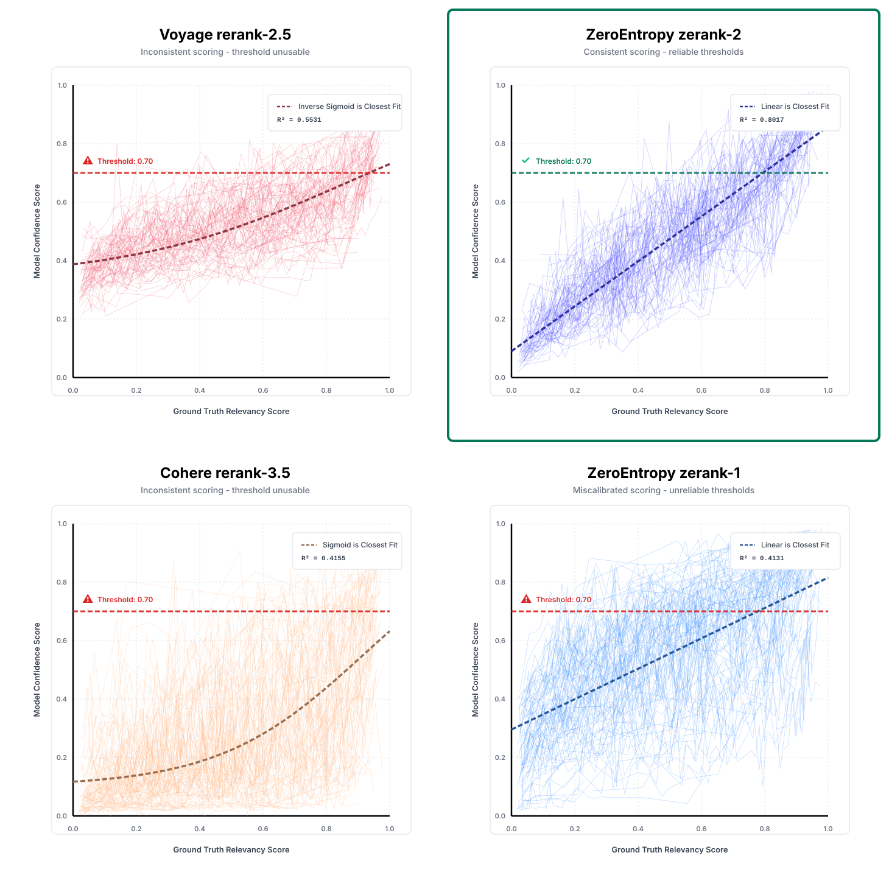
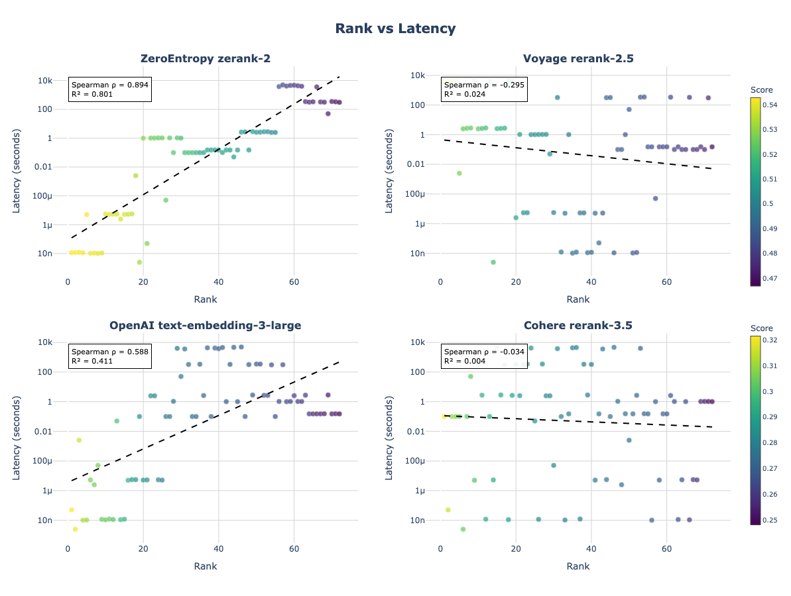
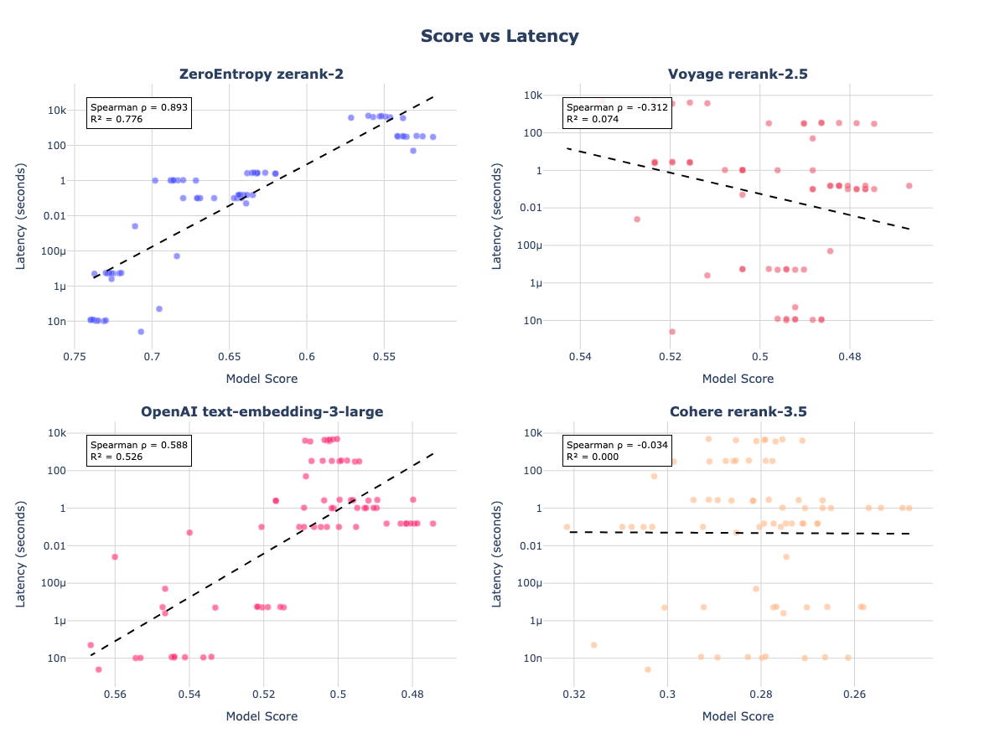

Introducing zerank-2
Today, we're releasing zerank-2: the world's best reranker, purpose-built to address some of the most important problems in information retrieval.
Rerankers are a crucial part of what makes search and RAG pipelines actually work in production — yet, even industry-standard rerankers (including Cohere's rerank-3.5) fail at capturing nuanced relevance for real-world queries.
zerank-2 outperforms every other reranker on both accuracy and latency — at half the price.
It excels at multilingual and cross-lingual data, follows user (and agent) instructions precisely, and is robust to those complex aggregation queries common in enterprise AI workflows.
Additionally, we've normalized our relevance scores and added a confidence statistic, allowing for more consistent interpretation of reranker output across all kinds of queries and domains.
Real Stories of How Rerankers Break in Production
From early stage startups to Fortune 50 AI teams, we kept hearing similar production failure modes:
- "It works okay in English, but performance tanks for multilingual queries"
- "We need to set a relevance threshold, but don't know how to interpret scores consistently."
- "It can't understand our domain terminology or specific use case without slow LLM query rewrites"
- "Prompting it with instructions breaks it entirely"
- "Documents that would provide helpful context to our agent get scored too low, just because they don't directly answer the question."
Many rerankers overfit on public benchmarks, yet don't generalize to these real production issues.
Introducing zerank-2
Today, we're releasing zerank-2, a state-of-the-art cross-encoder reranker built specifically to solve some of the most common production failures.
zerank-2 was trained with our new zELO training pipeline, which converts pairwise preferences into absolute Elo scores. You can read more about our methodology here.
The model is already available behind our API, and on HuggingFace.
What zerank-2 solves
1. Native Instruction-Following
Providing instructions to a reranker model can significantly boost accuracy results in most situations.
With zerank-2, you can now append specific instructions, lists of abbreviations, business context, or user-specific memories to influence how results get reranked.
<query> "IMO experience" </query> <instructions> You are looking for engineering talent for an AI startup in SF. </instructions> Document: "Candidate experience: International Math Olympiads" ZeroEntropy zerank-2: ZeroEntropy zerank-2 with instructions: 0.2141650169574414
zerank-2 also knows to give appropriate scores to documents not directly answering the user's query, but providing useful context which ensures diversity and quality of the response.
Query: "What should I cook for dinner?" Document: "I'm allergic to nuts." Cohere rerank-3.5: 0.023 GPT5.1 Thinking: 0.51 ZeroEntropy zerank-2: 0.25 #high score because this is helpful context for an agent
2. True Multilingual Parity
Most rerankers exhibit a strong modality gap between languages, ranking the very same document, translated into another language, lower than its English equivalent. That gap widens even more on non-English to non-English tasks.
We trained zerank-2 to be robust to multilinguality across 100+ languages with near-English performance across major languages, even on challenging scripts (Chinese, Arabic), and code-switching queries (Spanglish, Hinglish).
Identical queries and documents translated across languages provide a controlled ablation of multi-lingual and cross-lingual performance.
3. Score Bias Adjustment and New Confidence Score
Most rerankers' scores are "relatively" correct yet nonetheless "absolutely" meaningless: a score of 0.7 might indicate 90% relevance in one case, while 0.7 from another, might mean 30%.
Worse, some rerankers, like Voyage rerank-3.5, always output scores around 0.5, regardless of the true relevancy of the document. This makes setting a threshold your agent or workflow can trust to filter low-quality results almost impossible.
We fixed it.
Through careful calibration across query types and domains, every zerank-2 0.8 score actually means ~80% relevance, consistently, and predictably.
Also, it now even outputs a new Confidence Score, to give a measure of its own confidence.

The graphs above show this in action. Voyage and Cohere scores scattered across the space, making any single threshold fail. zerank-2 correlates linearly with ground truth scores much more robustly.
4. SQL-Style Queries and Aggregation Queries
It was surprising to discover just how many unstructured queries from our clients actually resemble structured SQL. Yet rerankers are not only not robust to these at all, they often degrade performance against just doing nothing.
Even a mere "ORDER BY" on quantitative values confuses every reranker, returning "ordered" results often worse than first-pass retrieval embedding models:
Query: "Which reranker is the fastest?" Doc 1: Jina's reranker: rerank-m0 • 300 ms latency Doc 2: Cohere's reranker: rerank-3.5 • 120 ms latency Doc 3: ZeroEntropy's reranker: zerank-2 • 60 ms latency ❌ Cohere rerank 3.5 prefers to put itself first ✅ ZeroEntropy ranks these perfectly


Get Started
Available now via the ZeroEntropy API:
from zeroentropy import ZeroEntropy ze = ZeroEntropy(api_key="your_api_key") # Pointwise reranking results = ze.models.rerank( model="zerank-2" query="your query", documents=["document a", "document b"], )
Drop-in replacement for zerank-1 or any existing reranker you run in prod, with 1 line of code change.
Documentation: zerank-2 docs
Pricing: $0.025/1M tokens, which is 50% cheaper than all other commercial rerankers.
Get in touch: Discord community or contact@zeroentropy.dev